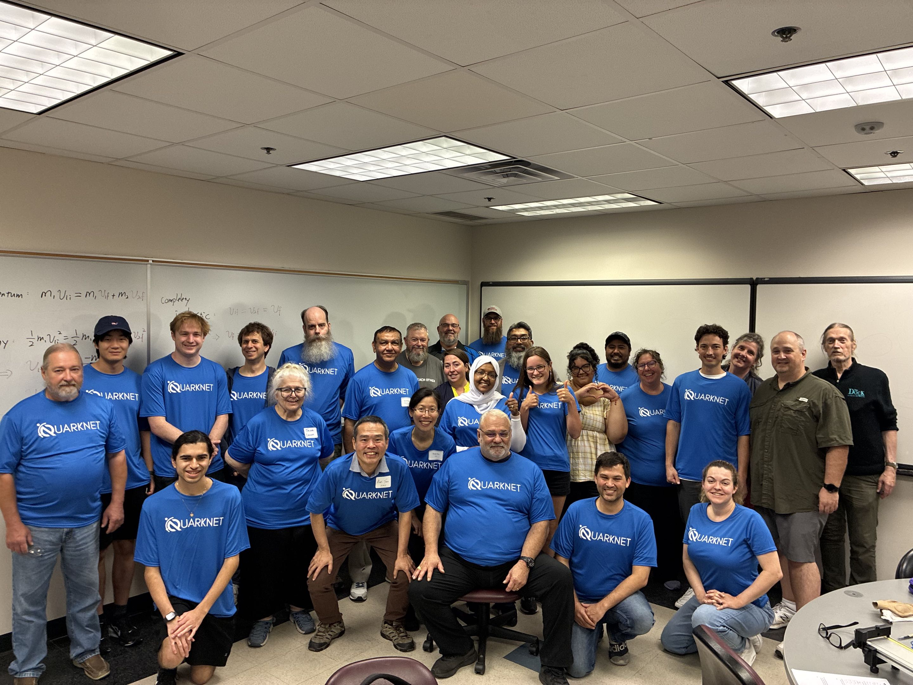

| First Name | Last Name | Affiliation |
|---|---|---|
| Beverly Trina | Cannon | Copiah - Lincoln Community College |
| Roatha | Chap | Mansfield Legacy High School |
| Mahbuba | Chowdhury | Shepton High School |
| Violet | Cole | Student at School for the Talented and Gifted at Townview |
| Kelly | Crossman | Emerson High School |
| Renier | de Bruin | WH Gaston Middle School |
| Randall | Dupree | John H. Guyer High School |
| Brian | Eppley | Reedy HS |
| Jose | Espinoza | Martin High School |
| Janee | Hall | Garland ISD |
| Syed | Hasan | Academy for Academic Excellence - Dallas County Volunteer |
| Michael | Horvath | Little Elm High School |
| Emily | Ramirez | Student at Little Elm High School |
| Jade | Ricketts | Royse City High School |
| John | Robbins | Lebanon Trail High School |
| Duncan | Rogers | Lebanon Trail High School |
| Bob | Sutherland | Royse City High School |
| John | Thompson | Plano East Senior High School |
| Barbara | Watson | Ursuline Academy of Dallas |
